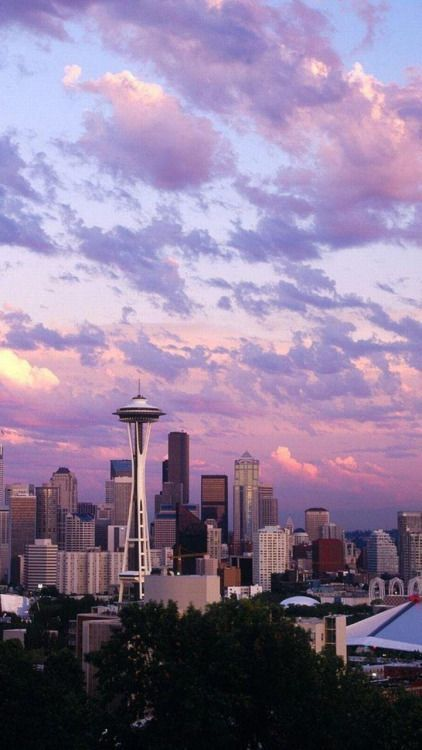
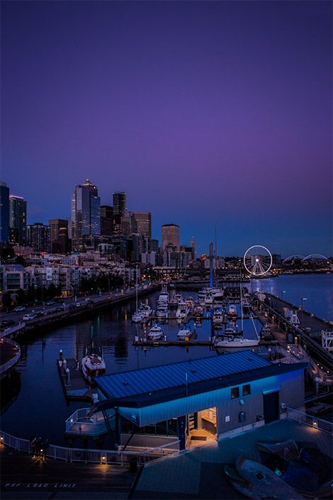
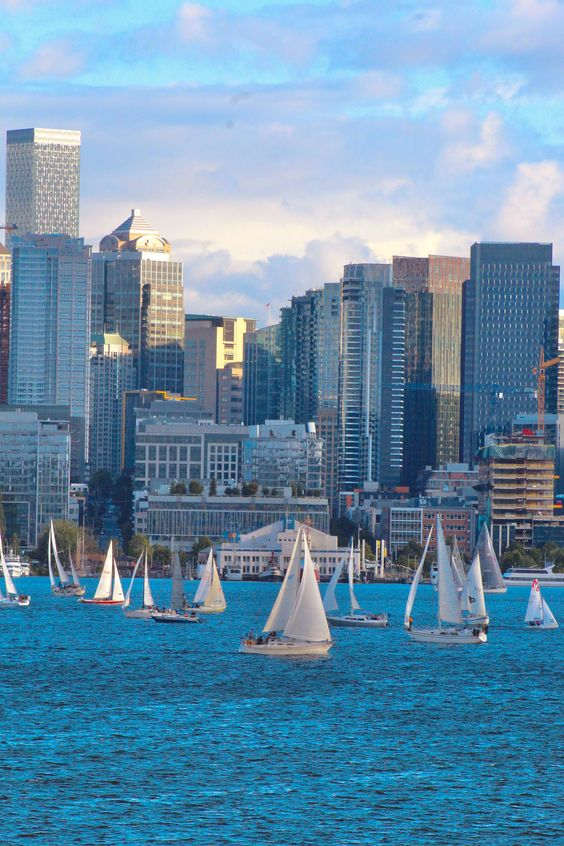
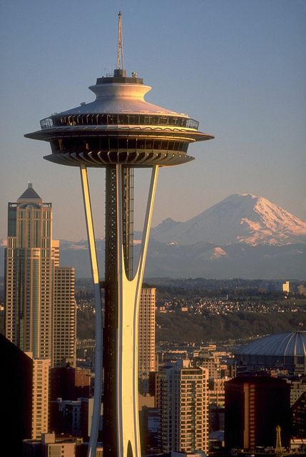
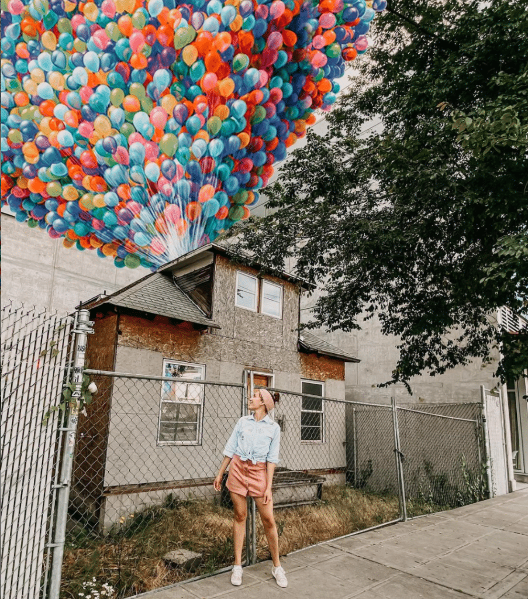

Seattle
Introduction
Seattle is a vibrant and culturally diverse city located in the Pacific Northwest
region of the United States. Known for its stunning natural surroundings, booming
tech industry, and rich cultural scene, Seattle has earned its reputation as the
"Emerald City."



·Location
Seattle is located in the western part of Washington State, because its location
on the Pacific coast makes Seattle an important economic and cultural center of
the region.
·Climate
Seattle has a temperate maritime climate with mild, humid winters and dry summers.
Landmark
The Space Needle stands as a renowned landmark in Seattle. Constructed as an iconic
observation tower for the 1962 World's Fair, it once boasted a revolving restaurant
perched atop the tower. This elevated dining experience allowed visitors to savor
breathtaking 360-degree vistas of Seattle through expansive glass windows.

Story
A house similar to the one in the movie "UP" can be seen in Seattle, located in
the middle of Ballard's neighborhood. The story of the owner of the house also
has similarities to the story of the protagonist in the film. Edith Macefield,
who owns the house, turned down the developer's offer.
